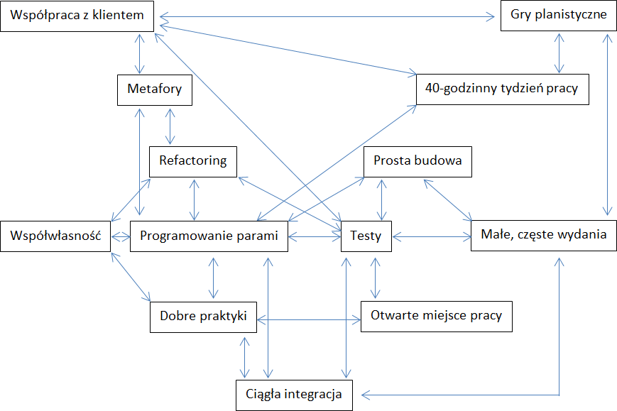
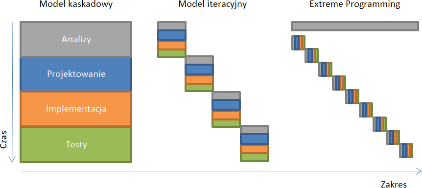

Programowanie ekstremalne (ang. Extreme Programming - XP) opracował programista Kent Beck. W 1996 roku Beck został zatrudniony w firmie Chrysler jako lider długo-terminowego projektu Chrysler Comprehensive Compensation System (C3), którego celem było przepisanie aplikacji płacowej. Wypracowane przez niego podejście do zarządzania tym projektem Beck opisał następnie w książce Extreme Programming Explained: Embrace Change, która została wydana w 1999 roku przez Addison-Wesley. [1]
Extreme Programming jest jedną z najpopularniejszych zwinnych metod zarządzania projektami IT i chociaż większość metodyk Agile ocenia się jako mniej rygorystyczne niż metodyki tradycyjne, to w przypadku XP takie określenie jest dalekie od prawdy. [2 s.2] Być może dlatego w podejściu R.K. Wysockiego przedstawionym na początku rozdziału Extreme Programming jest wręcz wyłączone z grupy metodyk zwinnych.
Extreme Programming swoją nazwę wzieło od pytania, które zadał sobie Beck: Co by się stało, gdyby wziąć każdą technikę/dobrą praktykę i realizować je do granic rozsądku? Na przykład dobrą praktyką w realizacji projektów IT jest przegląd kodu. Ekstremalne podejście do przeglądu kodu (ang. code review) polegałoby na realizowaniu tego zadania w sposób ciągły, ale czy takie podejście faktycznie miałoby pozytywny wpływ na projekt. Takie rozważania doprowadziły do wypracowania innych dobrych praktyk jak programowanie parami czy refaktoryzacja (ang. refactoring), które wspierają projektowanie prostych, efektywnych, maksymalizujących wartość biznesową apliakcji. Właściwe i pełne wdrożenie podejścia ekstremalnego wymaga wysokiego poziomu dyscypliny, pracy zespołowej i umiejętności. [2 s.2] Twórca podejścia ekstremalnego ten wysoki próg wejścia uznaje wręcz za atut metodyki, ponieważ jest ona tak samo trudna dla wszystkich przy czym trudności pojawianią się na różnych płaszczyznach. Niemcy mają problem z rezygnacją ze struktury hierarchicznej na rzecz zespołów projektowych. Meksykanie z kolei mają problem z ciągłym dbaniem o pisanie testów. [3]
Przy całej odmienności XP od pozostałych metod zwinnych wartości wskazane jako główne w XP nie różnią sie znacznie od pozostałych podejść. Są to: prostota, komunikacja, feedback, szacunek i odwaga. [4]
Extreme Programming największy nacisk kładzie jednak na aspekt techniczny projektu. Nic więc dziwnego, że wspomniane wyżej wartości przekładają się na konkretne techniki, które należy realizować. Są to: [5 s. 70-77.]
Rys. 3.4.1 Dobre praktyki w Extreme Programming oraz ich współzależności
Extreme Programming definiuje się jako podejście iteracyjne przy czym autor tej metodyki określa XP jako podejście alternatywne do iteracyjnego, co obrazuje wykres 3.4.2.
Rys. 3.4.2 Proces zarządzania projektem w podejściu tradycyjnym, iteracyjnym i Extreme Programming
Na wykresie jako pierwsze zostało przedstawione podejście tradycyjne, w którym etapy analizy, projektowania, wdrożenia i testów następują kolejno po sobie, a każdy z nich obejmuje cały zakres projektu. Metoda iteracyjna będąca odpowiedzią na kryzys takiego podejścia zaproponowała proste rozwiązanie w oparciu o ten sam schemat procesu. Rozwiązanie to polegało na zmniejszeniu opracowywanego zakresu projektu, a przez to podzielenie projektu na mniejsze, racjonalne, a przede wszystkim łatwiej zarządzalne części. Podejście ekstremalne zmienia proces łącząc wszystkie etapy w krótkim czasie opracowując niewielki zakres projektu.
W praktyce przekłada się to na proces podobny do tego, który funkcjonuje w Scrumie. Na początku przygotowuje się zestaw historyjek. Historyjka jest jednostką funkcjonalności w projektach XP. Powinna być zrozumiała i wartościowa dla klientów, testowalna przez programistów i na tyle mała, żeby programiści mogli zaimplementować sześć historyjek w jednej iteracji. [6 s.42] Mając na uwadze priorytety wdrożenia opracowanych historyjek oraz ich oszacowany czas realizacji wybiera się zestaw funkcjonalności, które zostaną wdrożone w nadchodzącym wydaniu. Spośród nich wybiera się zestaw historyjek (maksymalnie sześć), które zostaną wdrożone w najbliższej iteracji. Historyjki te są dzielone na mniejsze zadania, które jedna osoba może zrealizować w ciągu kilku dni. Zadania uwzględniają wszystkie kwestie: projektowe, techniczne, konsultacje, itp. Pojedynczy programiści decydują, które zadania zostaną przez nich zrealizowane, a następnie szacują czas ich realizacji w dniach idealnych. Zanim programista zacznie realizację zadania szuka partnera, ponieważ każda linijka kodu produkcyjnego jest pisana i weryfikowana przez dwie osoby. W trakcie iteracji programiści realizują przypisane sobie zadania, testują, a następnie integrują z całym systemem. W razie wątpliwości konsultują je z klientem. W trakcie iteracji klient opracowuje testy funkcjonalne. Na koniec iteracji są zaimplementowane i działają zarówno testy jednostkowe, jak i funkcjonalne. Celem iteracji jest wdrożenie przetestowanych funkcjonalności na serwer produkcyjny tak, że użytkownicy mogą już z nich korzystać. [5 s. 70-77]
Jak widać proces ten jak wspomniano wcześniej jest bardzo zbliżony do podejścia scrumowego przy czym XP duży nacisk kładzie na testy, a opis metodyki uwagę skupia przede wszystkim na aspektach technicznych realizacji projektu. W związku z tym te dwie metodyki mogą być komplementarne, gdzie Scrum uzupełnia podejście XP o kwestie związane z work flow.
XP definiuje niewielką liczbę ról w procesie zarządzania i realizacji projektu. Są to: [2 s.3]
[1] Copeland L.: Extreme Programming. computerworld.com. 2001.
[2] Lane D., Coffin R.: A Practical Guide to Seven Agile Methodologies. Part 1. Devx.com. 2006.
[3] Beck K.: Interview with Kent Beck and Martin Fowler. informit.com. 2001.
[4] extremeprogramming.org: Values z dnia 17.08.2013
[5] Beck K.: Embracing Change with Extreme Programming. Computer. 1999. nr 32.
[6] Beck K., Fowler M.: Planning Extreme Programming. Boston. Addison-Wesley. 2000.